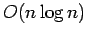
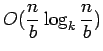

Next: OOC LU and QR Up: Problems and solving examples Previous: Problems and solving examples Contents
Sorting is a fundamental procedure, useful in many various tasks. It's very important to be able to efficiently sort large datasets using limited memory size.
One of possibilities to implement out-of-core sort may be the external merge sort. This algorithm is a recursive procedure as follows. In each recursion we check if current list fits entirely in physical memory. If so, we read entire list into main memory, sort it and write it back to disk in contiguous place. If not, we split current list into k sublists of equal sizes, sort each one recursively and then merge all sublists into one sorted list. Of course, main problem of this algorithm is the merging process, which must be done in an IO efficient way. We keep k buffers (each one for each sublist), which are initially initialised with first blocks of each sublist. Then we perform merging of items in k buffers (each buffer is already sorted) and output sorted items to disk. When some buffer is exhausted it is loaded with the next buffer from the corresponding sublist. This process continues until all of the k sublists are merged.
Let's denote input list size as n and size of one IO buffer as b. As we can see complexity of this algorithm is . The IO complexity is . By choosing right k we can minimalise IO communication.